TWCERT/CC
TWCERT/CC電子報訂戶
服務知曉度與使用率
TWCERT/CC電子報訂戶回收501份利害關係人問卷，其中僅18.4%是TWCERT/CC聯盟成員。業務性質中32.3%主要業務或服務是資安相關，48.5%雖然主要業務或服務不是資安相關，但有資安相關部門，僅19.2%沒有資安相關服務也沒有相關部門。
TWCERT/CC知曉度最高的服務是「資安弱點通報」，電子報訂閱者中TWCERT聯盟成員有高達94.3%知道「資安弱點通報」的服務，有資安部門的受訪者中則有88.7%知曉度，沒有資安部門者也有78.1%知曉度。
A3. 請問您知道TWCERT/CC有提供哪些業務？（可複選）
A4. 根據以上TWCERT/CC重要業務中，貴公司／組織是否曾使用或接觸過？（可複選）
（單選）
圖 1 服務知曉度與使用率
整體滿意度與信賴度
受訪者對於TWCERT/CC整體服務品質的滿意平均分數為4分，兩成認為很好，五成以上認為TWCERT/CC服務品質好。技術支援的整體滿意分數有3.9分，兩成表示很好，47.7%給予「好」的評價。
TWCERT/CC信賴評分有4.1分，27.1%受訪者完全同意對TWCERT/CC是信賴的，超過五成認同。服務價值的評分也為4.1分，並且接近三成完全同意TWCERT/CC提供的服務是有價值的，超過五成認同服務價值。
情資分享
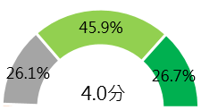
資安通報
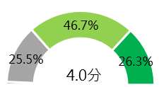資安電子報
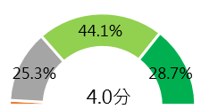B2. 整體而言，TWCERT/CC提供的以下服務對貴公司營運帶來的幫助如何？
n=501
圖 2 服務幫助程度
服務品質
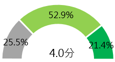
技術支援
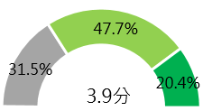
對TWCERT/CC是信賴的
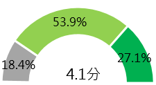覺得TWCERT/CC提供的服務是有價值的
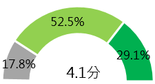A1. 整體來說，您對TWCERT/CC以下項目的滿意程度是？
A2. 從您過去與TWCERT/CC互動的經驗中，請選擇符合敘述的項目。
n=501
圖 3 滿意度評估與價值感受
活動參與、期待偏好
TWCERT/CC論壇會議或教育訓練內容有接近八成受訪者期待「可下載論壇或課程內容簡報」，六成期待「提供線上影片回看」，第三則有五成左右希望「增加中文講師或即時翻譯服務」。對於教育訓練有特別偏好的兩成受訪者進一步詢問偏好內容，課程方式有62.2%期望是網路課程，57.1%希望有實體課程，課程時間安排以整天課程比例較高(48.0%)，其次是希望在週間/平日進行教育訓練。
G5_1.請問您對教育訓練是否有特別偏好的方式或時間安排？（單選）
E7.請問您偏好哪種教育訓練的方式？（可複選）
n=501
圖 4 滿意度評估與價值感受
希望增加的議題或資訊如：
「資訊安全技術－駭客攻防、網路滲透防務、數位鑑識」
「資安素養－提升員工資安意識、企業防禦規劃」
「實際操作」
「創新應用－IoT」
資訊服務
對於TWCERT/CC發布的訊息整體關注分數為4分，18.6%總是關注，接近四成經常關注，36.1%偶爾關注，會關注TWCERT/CC發布的相關資訊主要原因是為了了解網路新知(77.5%)，其次七成是因為工作需求，約六成是因為自己的興趣。
F1.請問您關注TWCERT/CC 發布的資訊的情形是？（單選）
n=501
圖 5 關注頻率
F2.請問您關注TWCERT/CC發布的相關資訊的原因？（可複選）
n=501
圖 6 關注內容
F3.請問您未來對TWCERT/CC持續提供網路議題資訊的期待是？（可複選）
n=501
圖 7 期待議題
期望與建議
此一利害關係人主要是透過電子報內容獲取資安相關訊息，並能得知最新資訊率先加以防範，因此調查結果也顯示他們資安相關的資訊需求強烈，可以增加相關的資訊提供內容深度與廣度，後續也能多宣導對於進一步實際有資安事件發生時，可以偕同處理並且必要時與國外資安組織合作，加速事件處理速度。
台灣CERT/CSIRT聯盟成員
服務知曉度
台灣CERT/CSIRT聯盟回收8份利害關係人問卷，TWCERT/CC的情資分享與資安事件通報服務知曉度較高。
A2.請問您知道TWCERT/CC有提供哪些業務？（可複選）
n=501
圖 8 服務知曉度
信賴與價值評估
TWCERT/CC提供的服務幫助程度最高是「情資分享」，有4.1分，最高比例落在認為「有幫助」。「資安通報」幫助評分為3.9，其中有六成以上認為有幫助。「資安電子報」幫助評分有3.8分，一成認為非常有幫助，五成認為有幫助。
TWCERT/CC服務是有價值的認同評分有4.3分，接近四成完全同意。對TWCERT/CC是信賴的認同評分為4.1分，37.5%完全同意。
情資分享
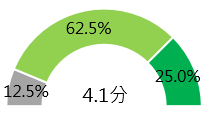
資安通報
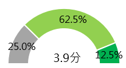資安電子報
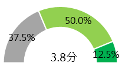B2. 整體而言，TWCERT/CC提供的以下服務對貴公司營運帶來的幫助如何？（單選）
n=501
圖 9 服務幫助程度
情資分享
資安事件通報
提升大眾/企業/社群資安意識
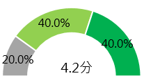
我對TWCERT/CC是信賴的
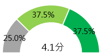覺得TWCERT/CC提供的
服務是有價值的
A5.您使用或接觸過的TWCERT/CC重要業務中，貴公司／組織的滿意度為？
A2.從您過去與TWCERT/CC互動的經驗中，請選擇符合敘述的項目。
（單選）
n=8
圖 10 滿意度評估與價值感受
活動參與、期待內容
近一年TWCERT/CC舉辦的會議或活動參與率達100%，受訪者關注主因是「了解資安議題」，其次為「工作需求」，第三則是「自己的興趣」。
E8. 請問您關注TWCERT/CC發布的相關資訊的原因？（可複選） （單選）
n=501
圖 11 關注原因
期望與建議
聯盟成員希望TWCERT/CC可以開發業務與舉辦活動、分眾宣導，此外也提到利用更多元和快速的管道與聯盟成員溝通或發布訊息；或是具體的服務內容如：提供整合情資並且提供產品介接、安全的DNS解析服務。